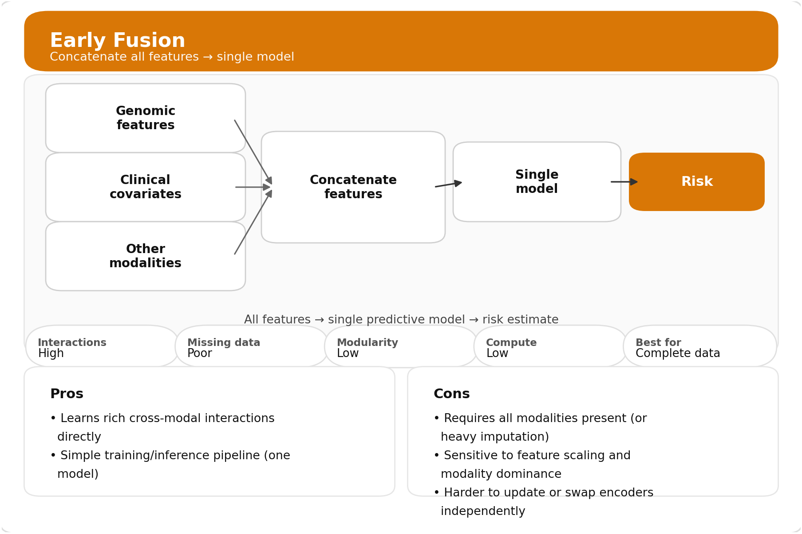
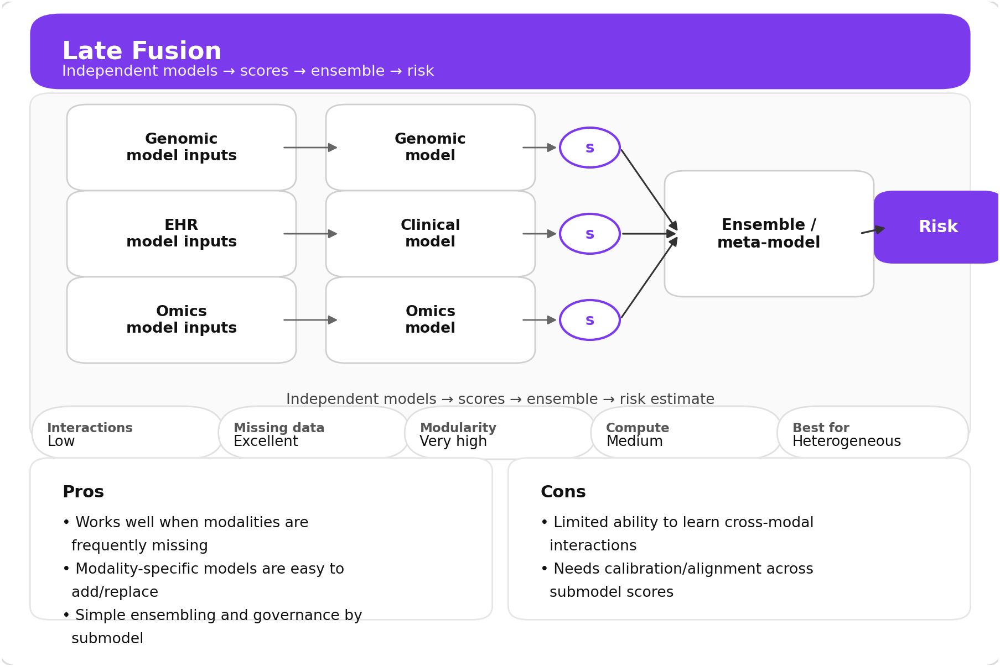
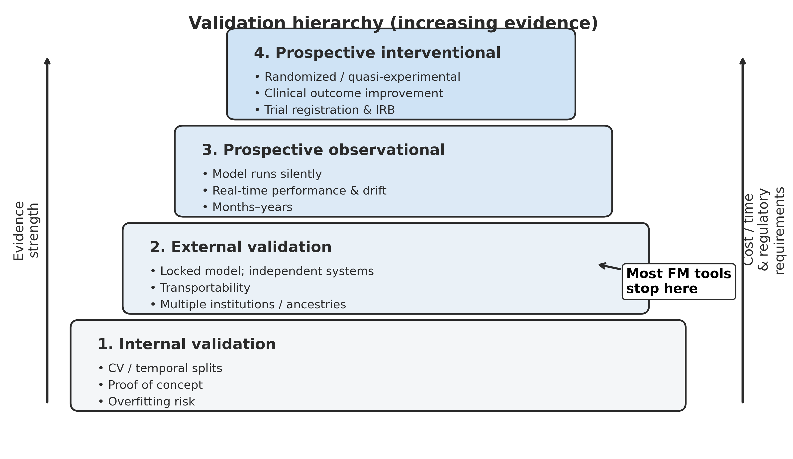
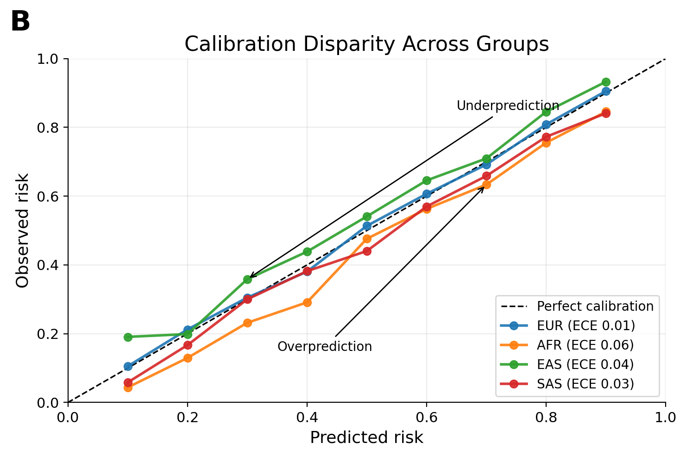
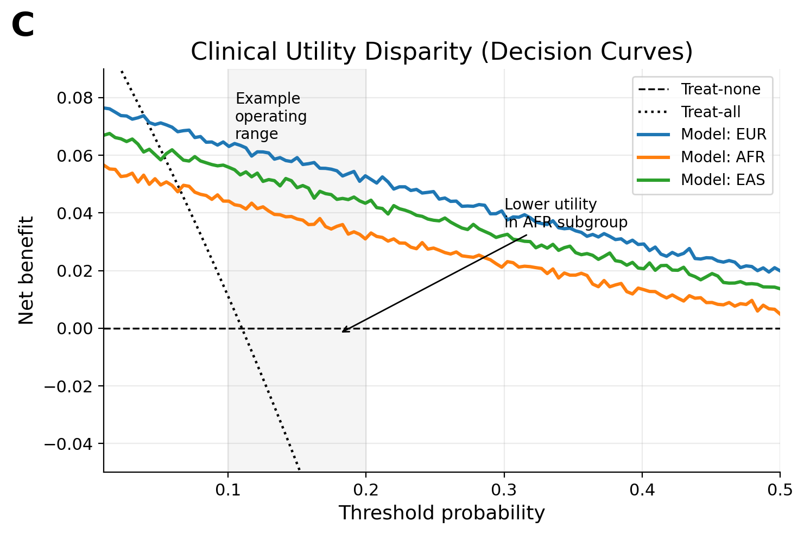
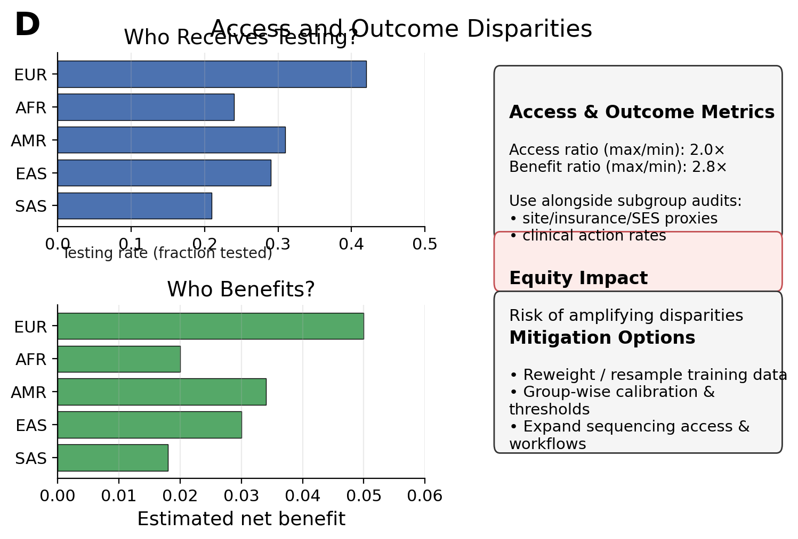
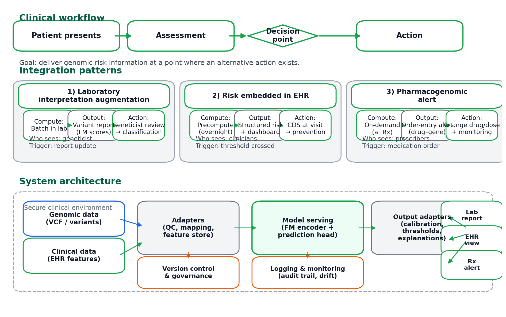
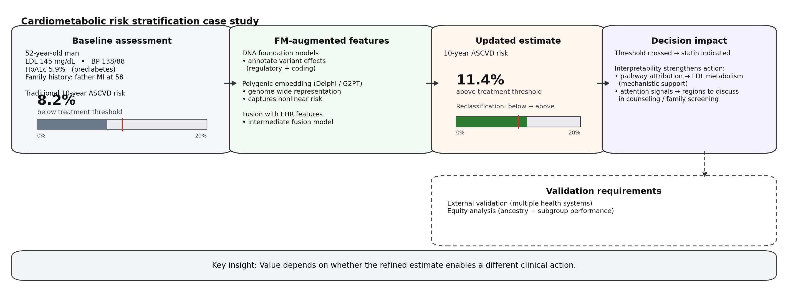

25 Clinical Risk Prediction
A risk prediction has clinical value only if it changes what happens next. A cardiologist who receives a polygenic risk score for coronary artery disease faces a simple question: does this information alter the treatment recommendation? If a patient with a high score receives the same statin prescription, lifestyle counseling, and follow-up schedule as a patient without genetic testing, the score added nothing to care regardless of its statistical validity. The fundamental challenge is not generating genomic predictions but translating them into actions that improve outcomes. This translation requires more than discrimination between who will and will not develop disease; it requires that the prediction reach clinicians in a usable form, at a decision point where alternatives exist, for a patient population where the prediction performs equitably.
Traditional polygenic scores, despite their scientific validity, often fail this translation test. They reduce entire genomes to single numbers that provide little mechanistic insight. They transfer poorly across ancestries because training data overrepresent European populations. They exist outside the electronic health records where clinical decisions actually happen, requiring manual lookup that busy clinicians rarely perform. Most fundamentally, the clinical actions available in response to a polygenic risk score (PRS), such as lifestyle modification, earlier screening, or preventive medication, are often the same actions recommended for patients with conventional risk factors, leaving unclear what the genetic information specifically enables.
Genomic foundation models offer capabilities that may address some of these limitations. Rather than collapsing genetic information into scalar risk scores, foundation models produce embeddings that capture sequence context, regulatory grammar, and functional consequences. These representations can integrate with clinical data through fusion architectures (Chapter 19), adapt to diverse prediction tasks through transfer learning (Chapter 9), and provide feature attributions that connect predictions to biological mechanisms (Chapter 24). Whether these capabilities translate into tools that change practice remains the open question. The path from these capabilities to tools that change practice runs through electronic health record integration, evidence standards for clinical deployment, fairness considerations that determine whether genomic AI reduces or amplifies health disparities, and the practical realities of care delivery.
25.1 From Polygenic Scores to Foundation Model Features
The limitations of classical polygenic risk scores define the opportunity for foundation model approaches. As discussed in Section 3.5, polygenic scores aggregate the effects of common variants into weighted sums, with weights derived from genome-wide association study effect sizes. This framework has demonstrated that common genetic variation contributes substantially to risk for conditions including coronary artery disease, type 2 diabetes, and breast cancer. A patient in the top percentile of polygenic risk for coronary disease faces roughly threefold higher lifetime risk than one in the bottom percentile, a gradient comparable to traditional risk factors like smoking or hyperlipidemia [Citation Needed].
Several limitations constrain the clinical impact of this approach. The linear additive model cannot capture epistatic interactions where one variant’s effect depends on others, nor can it represent the nonlinear relationships between genetic variation and disease that emerge from regulatory networks and cellular pathways. Polygenic scores derived from European-ancestry genome-wide association studies substantially underperform in other populations, with effect sizes often attenuating by half or more in African or East Asian ancestries due to differences in linkage disequilibrium structure and allele frequencies (Section 22.2.1; Section 3.7). Beyond these technical constraints, a single scalar provides no mechanistic insight: a high polygenic score for diabetes does not indicate whether risk stems from impaired insulin secretion, insulin resistance, or altered satiety signaling, information that might guide intervention selection.
Foundation models address these limitations through richer representations. Instead of treating variants as independent weighted features, models like Delphi and G2PT learn genome-wide embeddings that encode sequence context, regulatory annotations, and cross-variant interactions (Georgantas, Kutalik, and Richiardi 2024; Lee et al. 2025). These approaches can capture nonlinear structure in genetic risk, leverage functional priors that transfer across ancestries, and provide attention-based attributions that highlight which genomic regions contribute most to predictions. Fine-mapping models like MIFM estimate posterior probabilities for causal variants within association loci, allowing risk models to weight variants by evidence for causality rather than treating all correlated variants equally (Rakowski and Lippert 2025).
The practical architecture of a foundation model-enabled risk system typically involves three components: pretrained encoders that transform genomic data into embeddings, aggregation modules that summarize variant-level or region-level representations into patient-level features, and prediction heads that map these features (combined with clinical covariates) to risk estimates. This modular design separates the computationally expensive foundation model inference from the task-specific prediction layer, enabling updates to either component while maintaining clear interfaces for validation.
25.2 Defining Clinical Risk Prediction
A risk prediction model is only as useful as the decision it informs. Effective clinical risk prediction requires precise specification of four elements: the outcome being predicted, the time horizon over which prediction applies, the target population for whom the model is intended, and the clinical action the prediction will trigger.
Consider a 55-year-old woman with moderately elevated cholesterol and a family history of early coronary disease. Her cardiologist must decide whether to initiate statin therapy, a decision traditionally guided by 10-year cardiovascular risk estimates from tools like the Pooled Cohort Equations. A genomic foundation model could augment this decision in several ways. It might refine her absolute risk estimate by incorporating polygenic information that the traditional calculator ignores. It might identify whether her genetic risk concentrates in pathways amenable to specific interventions (LDL metabolism favoring statins versus inflammatory pathways suggesting alternative approaches). It might flag pharmacogenomic variants affecting statin metabolism that influence dose selection or drug choice.
Each of these applications represents a different prediction task with distinct requirements. The 10-year risk estimate for major adverse cardiovascular events is an individual-level incident risk problem where discrimination and calibration matter most. The pathway-level attribution is an interpretability challenge requiring mechanistic grounding. The pharmacogenomic prediction is a treatment selection problem where the relevant outcome is adverse drug reaction risk conditional on therapy initiation.
Clinical risk prediction tasks cluster into several archetypes. Incident risk concerns whether a currently disease-free individual will develop disease within a specified window, such as 10-year diabetes risk for prediabetic patients. Progression risk asks which patients with existing disease will develop complications, for instance nephropathy in diabetes or heart failure after myocardial infarction. Survival and prognosis involve time-from-diagnosis to events like death, recurrence, or transplant, often requiring survival models that handle censoring and competing risks. Treatment response and toxicity concerns whether a patient will benefit from one therapy versus another and their probability of experiencing serious adverse effects.
Foundation models enter these problems as feature generators. They transform raw sequence data into structured representations that downstream prediction models combine with clinical covariates. The architectural choices for this combination, and the evidence required to trust the resulting predictions, constitute the core methodological challenges of clinical translation.
25.3 Feature Integration Architectures
The features available for clinical risk models draw on multiple foundation model families, each capturing different aspects of genetic and molecular risk.
DNA-level foundation models provide variant effect predictions without requiring trait-specific training. Systems like Nucleotide Transformer, HyenaDNA, and GPN compute sequence-based deleteriousness scores that reflect how mutations disrupt regulatory grammar, splice sites, or protein-coding sequences (Dalla-Torre et al. 2023; Nguyen et al. 2023; Benegas, Batra, and Song 2023). These zero-shot predictions transfer across traits and ancestries because they derive from sequence properties rather than population-specific association statistics (Chapter 11). Fine-mapping models integrate these functional priors with association evidence to estimate which variants within a locus are likely causal, providing principled weights for aggregation (Section 3.4). Fine-mapping models like MIFM integrate such functional priors with association evidence to estimate which variants within a locus are likely causal, providing principled weights for aggregation (Rakowski and Lippert 2025).



Protein language models add coding variant interpretation. AlphaMissense and related systems predict pathogenicity for missense mutations based on evolutionary conservation patterns learned from millions of protein sequences, as discussed in Chapter 12. For conditions with strong coding variant contributions (Mendelian cardiomyopathies, cancer predisposition syndromes), these predictions provide crucial signal beyond what noncoding regulatory models capture.
Multi-omics foundation models extend beyond germline sequence. Cell-type-resolved representations from GLUE, scGLUE, and CpGPT capture regulatory state across chromatin accessibility, methylation, and expression (Chapter 16) (Cao and Gao 2022; Camillo et al. 2024). Rare variant burden scores from DeepRVAT aggregate predicted effects across genes into pathway-level impairment measures (Clarke et al. 2024). For oncology applications, tumor embedding models like SetQuence and graph neural network-based subtypers encode complex somatic mutation landscapes into patient-level representations (Jurenaite et al. 2024; Li et al. 2022).
Electronic health record features provide the clinical context without which genomic predictions lack meaning. Demographics, vital signs, laboratory values, medication lists, problem codes, and procedure histories characterize the patient’s current state and trajectory. Time-varying biomarker trajectories (estimated glomerular filtration rate trends, hemoglobin A1c patterns, tumor marker dynamics) capture disease evolution that static snapshots miss.
The architectural question is how to combine these heterogeneous inputs. Three fusion strategies offer different tradeoffs.
Early fusion concatenates all features into a single input vector and trains a unified model (neural network, gradient boosting, survival regression) on the combined representation. This approach allows the model to learn arbitrary interactions between genomic and clinical features but requires all inputs to be present for every patient, handles scale differences between modalities poorly, and can be dominated by whichever input provides the most features or strongest signal.
Intermediate fusion trains separate encoders for each modality, producing genomic embeddings, clinical embeddings, and multi-omic embeddings that a fusion module then combines. The fusion module might use attention mechanisms to weight modality contributions dynamically, cross-modal transformers that allow features from one modality to attend to features from another, or simpler concatenation with learned combination weights. This approach offers modularity (foundation model encoders can be swapped as new versions become available) while still enabling learned cross-modal interactions.
Late fusion trains independent models for each modality and combines their predictions through ensemble methods or meta-learning. A polygenic score model, an electronic health record model, and a multi-omic model each produce risk estimates that a final layer integrates. This approach handles missing modalities gracefully (each submodel operates independently) and allows modality-specific architectures but may underutilize cross-modal structure since interactions can only be captured at the final combination stage.
For clinical deployment, intermediate fusion often provides the best balance. It enables modular updates as foundation models improve, allows graceful degradation when modalities are missing, and captures cross-modal interactions that late fusion misses. The specific fusion mechanism (attention, concatenation, cross-modal transformer) matters less than ensuring the architecture supports the operational requirements of clinical deployment: batch computation, uncertainty quantification, and interpretable feature attribution.
25.4 EHR Integration and Phenotype Embeddings
Polygenic risk scores condense genetic information into scalar predictions, but clinical decision-making occurs in the context of rich electronic health records that capture diagnoses, procedures, medications, laboratory values, and clinical narratives. A PRS for coronary artery disease exists as an isolated number until integrated with a patient’s history of hypertension, diabetes, smoking, and lipid measurements. The question is not merely whether to combine genetic and clinical information, but how to do so in ways that improve prediction, maintain interpretability, and avoid introducing new sources of bias.
Traditional approaches treat EHR data as additional covariates in regression models that already include the PRS. Age, sex, smoking status, and existing diagnoses enter as predictors alongside the genetic score, with effect sizes learned from training data. This additive framework has clear interpretation but limited capacity: it assumes that genetic risk and clinical risk contribute independently, missing interactions where genetic predisposition matters more or less depending on clinical context. A patient with elevated LDL cholesterol and high coronary disease PRS may face multiplicative risk that additive models underestimate.
25.4.1 EEPRS Framework
The EHR-embedding-enhanced PRS (EEPRS) framework addresses these limitations by integrating phenotype embeddings derived from EHR data with GWAS summary statistics to construct improved polygenic scores (Xu et al. 2025). Rather than using expert-defined phenotype covariates, EEPRS learns vector representations of clinical phenotypes from their patterns of co-occurrence in patient records. These embeddings capture relationships among diseases, symptoms, and risk factors that expert definitions may miss.
The framework proceeds in stages. Embedding models (Word2Vec trained on ICD-10 code sequences, or GPT-based embeddings of code descriptions) transform each patient’s diagnostic history into a low-dimensional vector representation. GWAS conducted on these embedding dimensions identify genetic variants associated with each dimension of clinical phenotype space. The resulting summary statistics enable construction of embedding-based polygenic scores that capture genetic predisposition to the phenotypic patterns encoded in each dimension. Integration with traditional disease-specific PGS through weighted combination yields final risk predictions.
Validation in UK Biobank demonstrated consistent improvement over single-trait polygenic scores across 41 clinical traits. Cardiovascular conditions showed the largest gains: ischemic stroke improved by 66%, heart failure by 32%, and peripheral artery disease by 25% [Citation Needed]. These improvements concentrate in traits where related phenotypes share genetic architecture, allowing the embedding-based scores to leverage cross-phenotype genetic correlation. For isolated traits without strong embedding-dimension associations, improvements were modest or absent.
25.4.2 Understanding When Embeddings Help
The pattern of improvement across traits reveals when EHR embeddings add value to polygenic prediction. Conditions that cluster together in clinical space, co-occurring in patients and sharing risk factors, benefit most. The cardiovascular cluster (coronary artery disease, ischemic stroke, peripheral artery disease, heart failure, angina, type 2 diabetes) forms a coherent group in both clinical practice and genetic architecture. Embeddings trained on EHR data capture this clustering, and GWAS on embedding dimensions identify variants associated with the shared liability across the cluster. These variants provide additional prediction signal beyond what single-trait GWAS can detect.
Conversely, conditions with distinct genetic architectures that do not cluster with other phenotypes show minimal improvement. Breast cancer and coronary artery disease, despite both being common conditions well-represented in biobanks, did not benefit from embedding integration in external validation. Their genetic architectures are largely distinct; embedding-based scores derived from cardiovascular-weighted dimensions provide no additional signal for cancer prediction.
This selectivity has important implications for clinical deployment. EEPRS offers greatest value for conditions where conventional polygenic scores remain underpowered despite adequate GWAS sample sizes. Heart failure, peripheral artery disease, and asthma showed substantial improvements precisely because their polygenic scores have historically underperformed relative to heritability estimates. Embedding integration effectively borrows strength across genetically correlated phenotypes, amplifying signal that single-trait analyses struggle to detect.
25.4.3 PRS-PheWAS for Clinical Interpretation
Clinical deployment requires interpretability: why does this score predict disease risk, and what biological mechanisms does it capture? PRS-based phenome-wide association studies provide one answer by systematically testing association between the polygenic score and hundreds of clinical phenotypes (Section 3.8). For embedding-enhanced scores, PRS-PheWAS reveals which clinical manifestations the genetic risk predicts.
The EEPRS framework’s cardiovascular improvements became interpretable through PRS-PheWAS analysis. Embedding-based scores derived from ICA-transformed dimensions showed strong associations (adjusted \(p < 10^{-20}\)) with hypertension, atrial fibrillation, and cardiac dysrhythmias [Citation Needed]. These associations explain the improvement: the embeddings capture genetic variation that influences multiple cardiovascular endpoints, and aggregating across these endpoints provides stronger risk stratification than targeting any single outcome.
PRS-PheWAS also reveals unexpected associations that warrant clinical attention. Different embedding methods capture different aspects of phenotypic structure, with GPT-based embeddings uniquely identifying associations with infectious diseases and mental disorders that Word2Vec embeddings missed. These method-specific patterns may reflect differences in what the embedding approaches learn from clinical data, or they may indicate opportunities for method combination that leverages complementary signals.
25.4.4 Implementation Considerations
Translating EEPRS from research demonstration to clinical deployment requires addressing several practical challenges. The embedding models must be trained on EHR data representative of the deployment population; embeddings learned from UK Biobank may not transfer to health systems with different patient populations, coding practices, or documentation patterns. The integration weights that combine embedding-based and single-trait scores require calibration in the target population, not just the discovery cohort.
Computational requirements are modest once embeddings are pretrained. Scoring new patients requires computing their embedding from available ICD codes (a lookup operation), then calculating weighted sums across precomputed variant weights. The workflow integrates with existing PGS calculation pipelines, adding embedding score computation and integration as additional steps. Summary statistics for embedding-based GWAS can be distributed like conventional GWAS results, enabling score construction without sharing individual-level data.
The deeper challenge is population representativeness. EHR-based embeddings inherit the documentation patterns, coding practices, and healthcare access disparities of the health systems where they were trained. An embedding that positions diabetes near cardiovascular disease reflects the co-occurrence pattern in patients who access both cardiology and endocrinology care; patients who lack access to specialty care may show different patterns. Multi-ancestry validation revealed that EEPRS improvements varied across populations, with gains concentrated in conditions where the underlying genetic correlation structure held across ancestries.
25.4.5 Integration with Foundation Model Features
The EEPRS framework operates on GWAS summary statistics and phenotype embeddings, both derived from classical statistical approaches. Foundation models offer an alternative integration strategy where learned sequence representations replace or augment summary statistics. Rather than weighting variants by GWAS effect sizes, foundation model approaches can score variants by their predicted functional impact, regulatory consequence, or embedding similarity to known pathogenic variants (Chapter 14).
Attention-based integration, graph neural networks for pathway aggregation (Chapter 18), and transformer encoders for sequence context can all incorporate EHR embeddings as additional input features. A patient’s clinical embedding provides context that may modify interpretation of their genetic variants: a variant of uncertain significance (VUS) in a cardiovascular gene carries different implications for a patient whose clinical embedding places them in the cardiovascular risk cluster versus one with an unremarkable clinical profile. This contextualization moves beyond additive combination toward models that learn interactions between genetic and clinical risk.
The combination of phenotype embeddings and foundation model features remains largely unexplored. EEPRS demonstrated that phenotype embeddings capture heritable variation beyond single-trait GWAS; foundation models demonstrate that sequence context improves variant effect prediction beyond simple annotations (Section 14.7). Whether these approaches provide complementary signal, and whether their combination improves clinical prediction beyond either alone, represents an open research question with substantial clinical implications.
25.5 Temporal Modeling Architectures
Clinical risk prediction spans diverse temporal structures, and the choice of modeling framework must match the prediction task. A screening tool estimating whether a patient will develop diabetes within ten years faces different statistical challenges than a monitoring system tracking whether a patient’s kidney function trajectory signals imminent decline. Foundation model features can integrate into each framework, but the integration patterns differ.
Survival models address time-to-event outcomes where patients are followed until an event occurs or observation ends. The Cox proportional hazards model remains the workhorse of clinical risk prediction, estimating hazard ratios for features while making minimal assumptions about baseline hazard shape. Foundation model embeddings enter as covariates alongside clinical variables, with the proportional hazards assumption requiring that genomic risk effects remain constant over time. When this assumption fails (as when genetic effects on cancer recurrence differ between early and late periods), stratified or time-varying coefficient extensions accommodate the violation.


Deep survival models extend this framework through neural network architectures that learn nonlinear feature interactions. DeepSurv replaces the linear Cox predictor with a multilayer network while preserving the partial likelihood objective (Katzman et al. 2018). Deep Survival Machines model the survival distribution as a mixture of parametric components, enabling richer distributional assumptions than the semiparametric Cox approach (Nagpal, Li, and Dubrawski 2021). These architectures naturally accommodate the high-dimensional embeddings that foundation models produce, though the risk of overfitting increases and careful regularization becomes essential.
Longitudinal models address a different challenge: patients observed repeatedly over time, with measurements that evolve and interact. A patient’s hemoglobin A1c trajectory over five years contains information that a single baseline measurement cannot capture. Whether values are stable, rising, or fluctuating conveys prognostic signal beyond their current level. Joint longitudinal-survival models connect these repeated measurements to event outcomes, modeling how biomarker trajectories associate with hazard while accounting for informative dropout when sicker patients are measured more frequently or die before later observations.
Foundation model features integrate into longitudinal frameworks at multiple levels. Static genomic embeddings (computed once from germline sequence) serve as time-invariant covariates influencing both trajectory shape and event hazard. Time-varying molecular features (expression profiles, methylation states, circulating tumor DNA levels) can be encoded through foundation models at each measurement occasion, producing sequences of embeddings that recurrent or attention-based architectures process into trajectory representations. The computational cost of re-encoding molecular data at each timepoint is substantial, making efficient inference strategies essential for deployment.
Transformer architectures designed for irregularly sampled time series offer a natural framework for clinical trajectories. Models like STraTS and similar clinical transformers handle the variable timing and missing measurements characteristic of real-world healthcare data (Tipirneni and Reddy 2022). Position encodings based on actual timestamps rather than sequence position accommodate irregular sampling. Attention mechanisms identify which historical measurements most inform current predictions. Foundation model embeddings at each timepoint provide richer input representations than raw laboratory values alone.
The choice between survival and longitudinal frameworks depends on the clinical question and available data. When the goal is baseline risk stratification (identifying high-risk patients at a single decision point), survival models with static genomic features often suffice. When the goal is dynamic monitoring (detecting deterioration as it develops), longitudinal models that update predictions as new measurements arrive become necessary. Hybrid approaches that initialize with genomic risk and update based on clinical trajectory combine the strengths of both paradigms.
25.6 Evaluation for Clinical Deployment
High performance on held-out test sets is necessary but far from sufficient for clinical deployment. Risk models must satisfy multiple evidence standards that typical machine learning papers do not address, and teams planning translation must understand these requirements from the outset rather than discovering them after development is complete.
25.6.1 Discrimination
Discrimination measures how well a model ranks patients by risk, distinguishing those who will experience outcomes from those who will not. For binary endpoints like disease occurrence within a fixed time window, the area under the receiver operating characteristic curve (auROC) summarizes discrimination across all classification thresholds (Section 21.5). When outcomes are rare (severe adverse drug reactions, specific disease subtypes), the area under the precision-recall curve (auPRC) better reflects how well the model identifies true positives among many negatives. For survival tasks with censoring, the concordance index and time-dependent auROC generalize these metrics to the time-to-event setting.
Strong discrimination is necessary but not sufficient. A model that correctly ranks patients but systematically overestimates or underestimates absolute risk magnitudes will lead to inappropriate clinical decisions. If a model predicts 5% risk for patients who actually experience 15% event rates, physicians using those predictions will undertreat. Conversely, systematically inflated predictions lead to overtreatment with attendant harms and costs.
25.6.2 Calibration
Calibration asks whether predicted probabilities match observed frequencies. If a model assigns 20% risk to a group of patients, approximately 20% should experience the outcome. Well-calibrated predictions can be interpreted at face value and used directly for clinical decision-making; miscalibrated predictions mislead regardless of discrimination quality.
Assessment involves calibration plots comparing predicted risk deciles to observed event rates, statistical tests like the Hosmer-Lemeshow test, and proper scoring rules like the Brier score that combine calibration and discrimination (Section 21.10). The methodological foundations for these assessments, including temperature scaling and isotonic regression approaches, are detailed in Section 23.3. These assessments must be stratified by clinically relevant subgroups (ancestry, sex, age, comorbidity burden) because a model well-calibrated overall may be systematically miscalibrated for specific populations.
For polygenic score-informed models, calibration requires particular attention. Raw polygenic scores are typically centered and scaled rather than calibrated to absolute risk. Mapping a score to an absolute event probability requires post-hoc models incorporating baseline incidence and clinical covariates. Foundation models can shift score distributions as architectures evolve, meaning recalibration may be necessary when updating encoders. The connection to Chapter 23 is direct: calibration is one form of uncertainty quantification, assessing whether model confidence aligns with actual outcome frequencies.
25.6.3 Clinical Utility
Beyond discrimination and calibration, clinical utility asks whether using the model will change decisions beneficially. Net reclassification improvement quantifies how many patients are appropriately moved across risk thresholds compared to a baseline model. Decision curve analysis estimates net benefit across threshold probabilities, accounting for the relative costs of false positives and false negatives in specific clinical contexts.
For foundation model-based tools, these analyses must demonstrate incremental value over existing alternatives. If a complex genomic foundation model provides only marginal improvement over a traditional polygenic score plus standard clinical calculator, the additional complexity, cost, and implementation burden may not be justified. The relevant comparison is not “better than nothing” but “better than what clinicians can already access.”
25.6.4 Validation Hierarchy
Evidence strength depends critically on validation design. Internal validation through cross-validation or temporal splits within development data is useful but insufficient due to potential overfitting and subtle data leakage issues discussed in Section 21.4.1. External validation across institutions and ancestries tests the same locked model in independent health systems and diverse populations. This step is essential for assessing whether performance reflects genuine biological signal versus idiosyncratic features of the development dataset.

Prospective observational validation runs the model silently alongside clinical care without influencing decisions, measuring real-time performance and drift in deployment conditions. Prospective interventional trials use randomized or quasi-experimental designs to assess whether model-guided care actually improves outcomes, equity, and cost-effectiveness compared to usual care.
For most foundation model-based tools, regulators and health systems expect robust external validation at minimum. High-stakes applications (cancer prognosis affecting treatment intensity, pharmacogenomic predictions affecting drug choice) may require prospective interventional evidence. The investment required increases at each level of the hierarchy, but so does the confidence that deployment will produce benefit rather than harm.
25.7 Uncertainty Quantification
In clinical settings, models must know when they do not know. A risk prediction offered with false confidence is more dangerous than one accompanied by appropriate uncertainty bounds, because the former invites unwarranted action while the latter prompts appropriate caution or additional evaluation.
Two sources of uncertainty require distinction. Aleatoric uncertainty reflects irreducible noise in the outcome: even with perfect input features, some patients with identical measured characteristics will experience different outcomes due to unmeasured variables, stochastic biology, or measurement error. Epistemic uncertainty reflects model limitations: insufficient training data, architectural constraints, or distributional shift between training and deployment conditions. Aleatoric uncertainty cannot be reduced by collecting more data or improving models; epistemic uncertainty can (Section 23.1).

Practical uncertainty quantification methods include ensemble approaches, where multiple models trained with different random seeds provide prediction intervals based on their disagreement (Section 23.4.1). Monte Carlo dropout approximates Bayesian uncertainty by averaging predictions across stochastic forward passes (Section 23.4.2). Conformal prediction provides principled prediction intervals with guaranteed coverage under exchangeability assumptions, avoiding the distributional assumptions required by parametric methods (Section 23.5). Temperature scaling post-hoc adjusts model outputs to improve calibration without retraining (Section 23.3).
For foundation model-based systems, uncertainty decomposes into genomic and clinical components. Genomic uncertainty reflects confidence in variant effect predictions, fine-mapping probabilities, or embedding reliability; it increases for variants from underrepresented populations, rare variants with limited training examples, or sequences falling outside the distribution seen during pretraining. Clinical uncertainty reflects extrapolation to new care settings, practice patterns, or patient populations not represented in development data.
Selective prediction allows models to abstain when uncertainty exceeds thresholds, flagging cases for human review rather than providing potentially misleading predictions (Section 23.7). This is particularly important for patients from rare ancestries underrepresented in training data or with unusual clinical presentations. The tension between coverage (providing predictions for all patients) and reliability (ensuring predictions are trustworthy) must be navigated thoughtfully, ideally with input from the clinicians who will use the system.
25.8 Fairness and Health Equity
Many genomic and electronic health record datasets encode historical inequities in who gets genotyped, which populations are recruited into biobanks, and how healthcare is documented and delivered. Risk models trained on such data can amplify disparities if not carefully evaluated and designed.
The structural biases that genomic datasets inherit, from sequencing cohort recruitment to biobank composition to ClinVar submission patterns, create cascading effects on model performance. These biases manifest not as random noise but as systematic underperformance for populations historically excluded from genomic research (Section 22.2.1).
The ancestry bias in genome-wide association studies persists in foundation model applications. As discussed in Section 3.7, polygenic scores derived from European-ancestry data substantially underperform in other populations. Foundation models have the opportunity but not the guarantee to improve portability by leveraging functional priors that transfer across ancestries (sequence-based deleteriousness does not depend on population-specific linkage disequilibrium) and by incorporating multi-ancestry training data. Whether they succeed depends on training data composition, evaluation practices, and explicit attention to cross-ancestry performance throughout development.




Electronic health record features introduce additional bias sources. Which patients receive genetic testing, which laboratory tests are ordered, how diagnoses are coded, and how thoroughly clinical notes are documented all differ systematically across patient populations, care settings, and health systems. A model trained on one institution’s data may encode those institutional patterns rather than underlying biology.
Health equity evaluation requires disparity metrics measuring performance differences in discrimination, calibration, and clinical utility across subgroups defined by ancestry, sex, socioeconomic proxies, and care site. Access metrics assess whether financial, geographic, or systemic barriers limit which patients can benefit from genomic risk tools. Outcome metrics evaluate whether clinical actions triggered by predictions differ across groups and whether benefits accrue equitably or concentrate among already-advantaged populations.
Technical mitigation strategies include reweighting training data to reduce representation disparities, group-wise calibration ensuring equitable performance across subgroups, and localized fine-tuning using deployment-site data. These approaches are discussed further in Section 22.9. Technical interventions alone cannot overcome structural inequities. Non-technical approaches including expanding sequencing access, subsidizing testing for underserved populations, and designing workflows that accommodate diverse care settings are equally essential.
The core principle is that equity cannot be an afterthought addressed during final evaluation. It must inform pretraining data selection, benchmark choice, validation study design, and deployment planning from the outset. A model that appears well-calibrated overall but is miscalibrated for specific populations will exacerbate rather than reduce health disparities.
The governance frameworks, regulatory considerations, and responsible development practices for ensuring equitable clinical AI are examined in Chapter 29.
25.9 Clinical Integration
Even a comprehensively validated model can fail in practice if it does not integrate into clinical workflows. Genomic risk predictions must reach clinicians at decision points, in formats that support rather than disrupt care delivery, with appropriate interpretability and uncertainty communication.

25.9.1 Workflow Integration Patterns
Clinical genomics has established pathways for returning results through CLIA-certified laboratories, structured reports, and genetic counseling. Foundation model-based risk tools can augment these pathways in two primary ways. Laboratory interpretation augmentation uses foundation model predictions to prioritize variants for manual review, provide richer functional annotations, and suggest likely disease mechanisms supporting differential diagnosis. Direct risk embedding in electronic health records precomputes risk scores for patients with genomic data, surfaces them in structured fields or clinical dashboards, and triggers alerts when thresholds are crossed.
Design choices include batch versus on-demand computation (batch overnight processing is often preferable given foundation model computational costs and the relative stability of genomic data), synchronous alerts at order entry versus asynchronous reports in clinical inboxes, and whether high-impact predictions require human-in-the-loop review before reaching front-line clinicians.
The specifics vary by clinical context. Pharmacogenomic alerts might appear synchronously at prescription order entry, providing immediate guidance on drug selection or dosing. Cardiometabolic risk scores might appear in primary care dashboards updated weekly, informing prevention discussions at annual visits. Oncology prognosis estimates might be generated at diagnosis and reviewed in tumor board settings where multidisciplinary teams make treatment decisions.
25.9.2 System Architecture
From an engineering perspective, foundation model-based clinical tools typically require a secure model-serving endpoint handling inference requests, input adapters transforming laboratory and electronic health record data into model-ready formats, output adapters mapping predictions to structured clinical concepts or user-facing text, and logging infrastructure providing audit trails and enabling drift detection.
Regulated settings impose additional requirements: versioning of models, data pipelines, and reference genomes with complete reproducibility; access controls and network segmentation protecting genomic data; and validation environments separated from production for safe testing of updates. Practical guidance on hardware requirements, deployment patterns, and cost estimation appears in Appendix B.
25.9.3 Post-Deployment Monitoring
Clinical deployment begins rather than ends the model lifecycle. Practice patterns evolve as new treatments and guidelines emerge. Patient populations shift as screening programs expand or contract. Laboratory assays and sequencing pipelines change, introducing distributional shifts in input features.
Monitoring systems should track input distributions (genotype frequencies, electronic health record feature patterns) to detect when current patients differ from training populations. Output distributions (risk score histograms, threshold-crossing rates) reveal whether model behavior is changing. Performance metrics computed via rolling windows or periodic audits detect calibration or discrimination degradation before clinical consequences accumulate.
When drift is detected, responses range from recalibration (adjusting the score-to-probability mapping while preserving ranking behavior) through partial retraining (updating prediction heads while keeping foundation model weights fixed) to full model updates (retraining encoders, requiring renewed validation). The modular separation between foundation model backbones and clinical prediction heads facilitates this maintenance: encoders can be versioned and swapped with compatibility testing while prediction heads adapt to local deployment conditions.
Incident response processes allow clinicians to report surprising or harmful predictions, triggering root-cause analysis and potential remediation. Governance structures including AI oversight committees review models periodically and establish clear criteria for deprecation when performance degrades below acceptable thresholds.
25.10 Regulatory and Quality Frameworks
Foundation model-based clinical tools exist on a spectrum from research-only applications supporting hypothesis generation through clinical decision support tools informing diagnosis or management to regulated medical devices subject to formal oversight. The regulatory classification depends on intended use, risk level, and the claims made for the tool.
Jurisdictions differ in specifics, but common expectations include transparent descriptions of training data and known limitations, quantitative performance evidence across relevant subgroups, plans for post-market surveillance and incident reporting, and change management procedures for model updates. Beyond formal regulation, health systems typically require standard operating procedures for deployment and decommissioning, model cards describing training data and limitations, validation reports documenting evaluation evidence, and governance structures reviewing and approving new tools (Section 29.1).
Foundation models introduce additional documentation requirements. Descriptions of pretraining corpora must specify which genomes, assays, and populations were included. Fine-tuning datasets and label definitions require detailed documentation. Procedures for updating to new genome builds, reference panels, or assay types must be established and tested. The modular separation between pretrained encoders and clinical prediction heads can ease regulatory management by allowing independent updates to each component, but this requires careful version control and compatibility testing to ensure that updating one component does not degrade performance of the combined system.
25.11 Case Studies
Three stylized case studies illustrate how foundation model features integrate into clinical risk prediction across different disease contexts, time horizons, and decision types.
25.11.1 Cardiometabolic Risk Stratification
A 52-year-old man presents to his primary care physician for an annual wellness visit. His LDL cholesterol is 145 mg/dL, blood pressure is 138/88 mmHg, and hemoglobin A1c is 5.9%, placing him in the prediabetic range. His father had a myocardial infarction at age 58. The standard Pooled Cohort Equations estimate his 10-year atherosclerotic cardiovascular disease risk at 8.2%, just below the threshold where guidelines recommend statin therapy.
A foundation model-augmented risk system could refine this assessment. Variant effect scores from DNA foundation models annotate variants in cardiometabolic risk loci with predicted regulatory and coding impacts, combining sequence-based scores with fine-mapping probabilities to prioritize likely causal variants (Section 14.3; Section 14.4). A polygenic embedding model like Delphi or G2PT produces a genome-wide representation capturing nonlinear risk structure beyond simple effect size sums (Georgantas, Kutalik, and Richiardi 2024; Lee et al. 2025). This genomic embedding combines with electronic health record features through an intermediate fusion architecture, producing an updated 10-year risk estimate of 11.4%, above the treatment threshold.

The clinical value depends on what this refined estimate enables. If genomic foundation model features merely replicate traditional polygenic score information with higher computational cost, the benefit is marginal. But if the embedding captures pathway-level structure that identifies this patient’s risk as concentrating in LDL metabolism pathways rather than inflammatory or thrombotic mechanisms, that information might strengthen the indication for statin therapy specifically. Attention-based attributions highlighting which genomic regions contribute most to the elevated risk could inform counseling about heritability and family screening.
External validation across multiple health systems and ancestries would need to demonstrate that the foundation model approach provides calibrated predictions and meaningful reclassification improvement over traditional tools. Equity analysis would verify that performance holds across the diverse populations the health system serves rather than degrading for non-European ancestries underrepresented in training data.
25.11.2 Oncology Prognosis
A 64-year-old woman has undergone surgical resection for stage II colorectal cancer with microsatellite stable tumor characteristics. Her oncology team must decide whether adjuvant chemotherapy is warranted given the balance between recurrence risk reduction and treatment toxicity. Traditional staging provides prognostic information, but substantial heterogeneity exists within stage categories.
Foundation models can enrich prognostic assessment through multiple channels. Tumor mutation profiles encoded through models like SetQuence or SetOmic produce embeddings capturing the specific constellation of somatic alterations beyond simple mutation counts (Jurenaite et al. 2024). Transcriptomic profiling integrated through GLUE-style latent spaces adds expression context reflecting tumor microenvironment and pathway activity (Cao and Gao 2022). Graph neural network-based subtyping assigns the tumor to a molecular subtype with characteristic prognosis and treatment response patterns (Li et al. 2022).
These tumor-level representations combine with germline pharmacogenomic features (variants affecting fluoropyrimidine metabolism that influence toxicity risk) and clinical features (performance status, comorbidities, patient preferences) in a survival model predicting two-year recurrence hazard. A high-risk prediction might favor more intensive adjuvant therapy, while low-risk predictions might support observation with close surveillance.
The validation requirements are stringent. Retrospective analysis of institutional cohorts establishes proof of concept, but prospective validation in cohorts receiving contemporary treatment regimens is necessary given the rapid evolution of oncology care. Interpretability connecting predictions to specific mutations, pathways, or molecular subtypes supports clinical adoption by providing rationale beyond a black-box hazard estimate.
25.11.3 Pharmacogenomic Adverse Event Prediction
A 45-year-old man with newly diagnosed epilepsy requires anticonvulsant therapy. Carbamazepine is a common first-line choice, but it carries risk of severe cutaneous adverse reactions including Stevens-Johnson syndrome and toxic epidermal necrolysis. The HLA-B15:02* allele is strongly associated with carbamazepine hypersensitivity in patients of Asian ancestry, and FDA labeling recommends genetic testing before initiating therapy in at-risk populations [Citation Needed].
This established pharmacogenomic association illustrates both the potential and limitations of current approaches. Single-variant associations with high effect sizes enable straightforward clinical implementation, but they cover a small fraction of drug-gene interactions. Many patients who do not carry HLA-B15:02* still experience adverse reactions, suggesting additional genetic (and non-genetic) risk factors that single-variant testing misses.
Foundation models could extend pharmacogenomic prediction beyond established single-gene associations. Variant effect scores across HLA genes, drug metabolism enzymes, and immune-related loci provide features reflecting the patient’s overall pharmacogenetic landscape (Section 2.8.4). These features aggregate into a polygenic adverse event risk score that captures contributions from many variants rather than relying on individual high-effect alleles. Combined with clinical features (renal function affecting drug clearance, concomitant medications with interaction potential, prior adverse reaction history), the model predicts adverse event probability specific to the proposed drug.
The validation challenge is severe. Serious adverse drug reactions are rare, making endpoint ascertainment difficult and underpowered. Case-control designs enriched for adverse events may overestimate model performance compared to prospective deployment. Multi-site validation across healthcare systems with different prescribing patterns and population ancestry compositions is essential.
Clinical implementation requires integration at the point of prescribing, providing actionable information when drug selection decisions are being made. This argues for pre-computed pharmacogenomic profiles that alert at order entry rather than reactive testing after a prescription is written. The interpretability requirement is particularly acute: clinicians must understand why a model flags a patient as high-risk for a specific drug to make informed risk-benefit decisions.
25.12 Translation as the Test
Success for genomic foundation models in clinical medicine will depend less on model scale and more on rigorous translation. Problem definition, evidence generation, equity evaluation, regulatory compliance, workflow integration, and post-deployment monitoring each introduce opportunities for failure. Models that clear all hurdles are rare; models that skip stages fail in deployment regardless of their technical sophistication.
The representational advances that foundation models provide become valuable only when they flow through validated, equitable, well-integrated clinical tools into decisions that improve patient outcomes. A pathogenicity score with state-of-the-art discrimination adds nothing to care if it reaches clinicians at the wrong moment, in the wrong format, without appropriate uncertainty communication. A risk prediction that performs excellently on average but fails systematically for underrepresented populations may widen health disparities rather than narrow them. Technical capability is necessary but not sufficient for clinical impact.
Rare disease diagnosis illustrates these translation principles in a particularly high-stakes context: where risk prediction addresses population-level stratification, variant interpretation addresses individual patients, with different evidence requirements, clinical workflows, and definitions of success (Chapter 26).